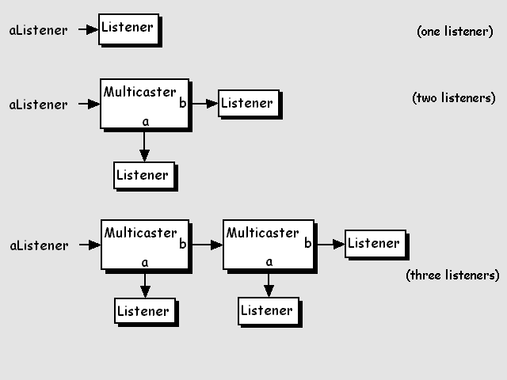
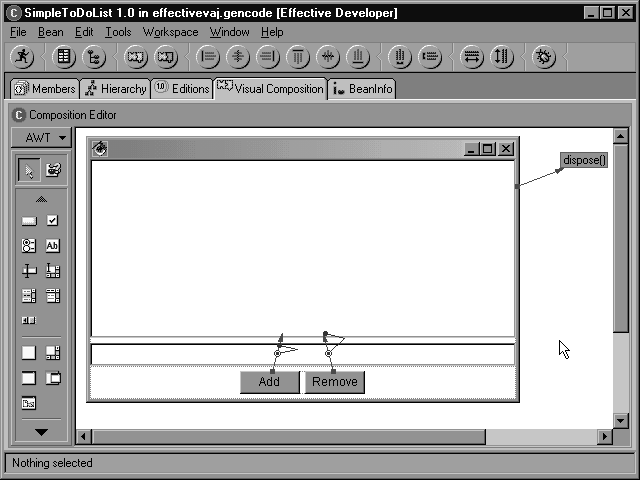
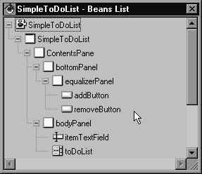
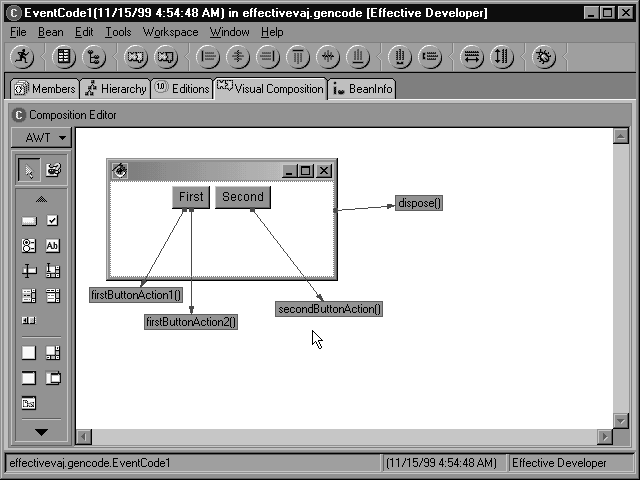
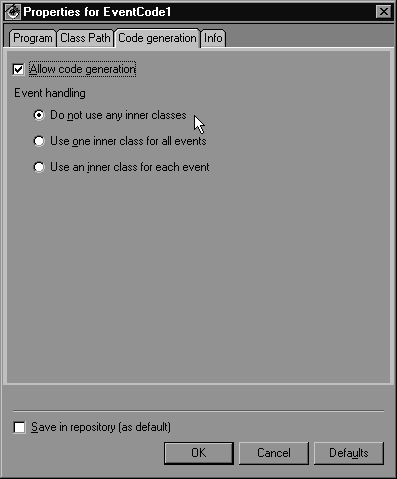
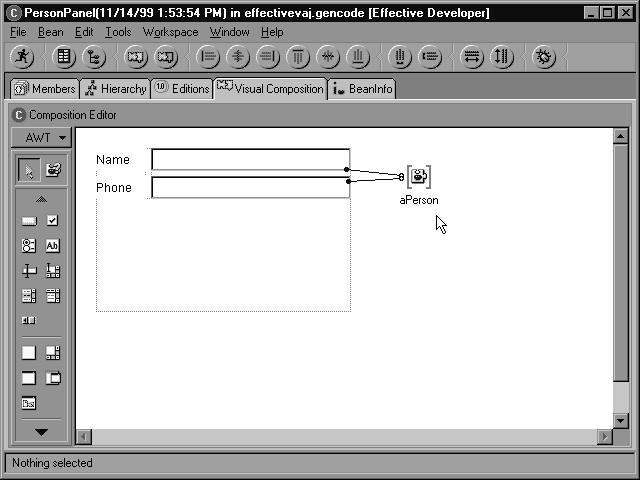

Understanding the Generated Code
This section was cut from the book Effective VisualAge for Java, Version 3 due to page count limitations. We decided to make the content available on the web. I mean, hell, it was already written. Why throw away a good weekends worth of writing eh? The rest of Chapter 19 (which used to include this content) is a discussion of generated code versus handwritten code, and advice on how/when to combine them.
Note that the sample code in this article was generated using VisualAge for Java, Version 3.02. The code is very similar to the code generated by 3.5, though the 3.5 code may correct a few bugs. At some point, if I have some free time, I may update this (but don't hold your breath, folks...)
Also: The figures in this article are grayscale, as this is the format for the book and I haven't retaken the screenshots. Also -- the code coloring isn't perfect, but it's a quick pass to get this out.
Warning
Do not read this article while driving or operating other heavy machinery.
Discussions of generated code have been known to induce sleep, often approaching
comatose state. While it is not my intention to bore folks, consider yourself
warned -- some of this stuff can be long and dry, mates...
{Cut book content begins here}
This section is rather long; we provide it to help you understand the code that VisualAge for Java generates. The main reason to provide this type of information is to help you trust the code that VisualAge generates. Think of this section as a reference guide, and refer to it for explanations of pieces of your program. If you really want to read it straight through, make sure you feel well rested and have plenty of coffee on hand. Generated code can be quite dry.
Note
VisualAge for Java generates types and methods that may have very long lines and
often use fully qualified names. For example, rather than using import
statements, the generated code may explicitly specify classes by prefixing them
with their package names. We have modified the examples in this chapter by
splitting long lines and removing unnecessary type qualification. The examples
are otherwise exactly what VisualAge for Java generates.
Classes
The following source code is the actual code that VisualAge generates when you ask it to create a class. Single-line comments, that is, comments that start with two slashes, provide description of the generated code.
For this example, we created a class called SampleClass that extends JButton and implements Enumeration. This example demonstrates most of the code that the Create Class SmartGuide creates.
Commentary about the generated code is included in comments starting with "//#". All other code and comments are generated by VisualAge for Java.
//# This sample class definition was created through the
//# Add Class SmartGuide, with the following parameters
//# Package: effectivevaj.gencode
//# Class Name: SampleClass
//# Superclass: com.sun.java.swing.JButton
//# Interfaces: java.util.Enumeration
//# Options:
//# public
//# create stubs for methods which must be implemented
//# copy constructors from superclass
//# create stubs for equals() & hashCode()
//# create stub for finalize()
//# create stub for main(String[])
//# create stub for toString()
//#==========================================================
//# ==> The package statement appears only in exported
//# code -- you will not see it in the workbench
package effectivevaj.gencode;
//#==========================================================
//# ==> For this example, we had the Coding option
//# "Add imports for fully-qualified types from
//# SmartGuides" checked. This adds the following two
//# imports for JButton and Enumeration
import com.sun.java.swing.*;
import java.util.*;
//#==========================================================
//# ==> The following class documentation comment comes from
//# the "Coding->Type Javadoc" page of the
//# Window->Options dialog
//# The text you see below comes from a template that
//# looks as follows
//# .-------------------------------------.
//# | Insert the type's description here. |
//# | Creation date: <timestamp> |
//# | @author: <user> |
//# .-------------------------------------.
//#
/**
* Insert the type's description here.
* Creation date: (10/30/99 2:37:37 PM)
* @author: Effective Developer
*/
public class SampleClass extends JButton
implements Enumeration {
//# ==> Copied Constructors
//# When you choose this option, the SmartGuide
//# creates constructors that match the parameter
//# types of all constructors in the superclass
//# The stubs simply call the corresponding
//# superclass version of the constructor,
//# providing the same constructors in a subclass
//# that are provided in the superclass
/**
* SampleClass constructor comment.
*/
public SampleClass() {
super();
}
/**
* SampleClass constructor comment.
* @param icon com.sun.java.swing.Icon
*/
public SampleClass(Icon icon) {
super(icon);
}
/**
* SampleClass constructor comment.
* @param text java.lang.String
*/
public SampleClass(String text) {
super(text);
}
/**
* SampleClass constructor comment.
* @param text java.lang.String
* @param icon com.sun.java.swing.Icon
*/
public SampleClass(String text, Icon icon) {
super(text, icon);
}
//#======================================================
//# ==> Method stubs created for interface Enumeration
//# When this option is selected, the SmartGuide
//# creates stubs that return a zero-like value
//# (0, false, or null) for any necessary return
//# value.
/**
* hasMoreElements method comment.
*/
public boolean hasMoreElements() {
return false;
}
/**
* nextElement method comment.
*/
public Object nextElement() {
return null;
}
//#======================================================
//# ==> The main() method
//# Selecting this option generates a dummy main
//# in which you can fill in your desired behavior
/**
* Starts the application.
* @param args an array of command-line arguments
*/
public static void main(String[] args) {
// Insert code to start the application here.
}
//#======================================================
//# ==> The finalize() method
//# Generated so you have somewhere to put cleanup
//# actions. NOTE: There is no guarantee that
//# finalizers will actually run! You should not
//# depend on this code ever executing.
/**
* Code to perform when this object is garbage collected.
*
* Any exception thrown by a finalize method causes the
* finalization to halt. But otherwise, it is ignored.
*/
protected void finalize() throws Throwable {
// Insert code to finalize the receiver here.
// This implementation simply forwards the message
// to super. You may replace or supplement this.
super.finalize();
}
//#======================================================
//# ==> The equals() method
//# Generated to give you an easy start to check
//# for semantic equality between two objects
/**
* Compares two objects for equality. Returns a boolean
* that indicates whether this object is equivalent
* to the specified object. This method
* is used when an object is stored in a hashtable.
* @param obj the Object to compare with
* @return true if these Objects are equal;
* false otherwise.
* @see java.util.Hashtable
*/
public boolean equals(Object obj) {
// Insert code to compare the receiver and obj here.
// This implementation forwards the message to
// super. You may replace or supplement this.
// NOTE: obj might be an instance of any class
return super.equals(obj);
}
//# ==> The hashCode() method
//# Normally you should implement this whenever
//# you need equals(), as a Hashtable uses both
/**
* Generates a hash code for the receiver.
* This method is supported primarily for
* hash tables, such as those provided in java.util.
* @return an integer hash code for the receiver
* @see java.util.Hashtable
*/
public int hashCode() {
// Insert code to generate a hash code for the
// receiver here.
// This implementation forwards the message to
// super. You may replace or supplement this.
// NOTE: if two objects are equal
// (equals(Object) returns true) they must
// have the same hash code
return super.hashCode();
}
//#======================================================
//# ==> The toString() method
//# Generated to give you an easy start for
//# create helpful debugging output
/**
* Returns a String that represents the value of this
* object.
* @return a string representation of the receiver
*/
public String toString() {
// Insert code to print the receiver here.
// This implementation forwards the message to
// super. You may replace or supplement this.
return super.toString();
}
}
The Effect of Import Statements
If you add imports statements to your class, the Visual Composition Editor may be able to generate slightly cleaner code. Currently, the VCE only pays attention to import-on-demand import statements.
Import-on-demand statements look as follows:
import java.awt.*;
The asterisk at the end of the package name tells the compiler, "Whenever you see a type name that you do not recognize, check to see if it is in this package." If you include import statements like this, the VCE will omit its normal full qualification of types in that package, with a few exceptions. For example, if you include the previous import statement in your class definition and drop a Button bean in the visual composition for that class, the VCE will generate a variable declaration such as:
private Button ivjokButton;
If you did not have the import statement, the generated variable declaration would be:
private java.awt.Button ivjokButton;
This is similar for most of the methods that the VCE generates to support that button in the visual design. Currently there is one exception: The new expression to create the component is still fully qualified. This has been reported as a bug to IBM. For information on obtaining patches for VisualAge for Java, see Appendix E, "VisualAge for Java Resources."
Note
Before you deliver your application, you should convert any import-on-demand
statements to explicit imports. Rather than using the previous import statement,
your code should use
import java.awt.Button;
to assist maintainability and readability of your code. This is especially important when you move to the Java 2 platform. Java 2 provides several class names that exist in multiple packages. For example, List appears as a component class in the java.awt package, and as an interface in the java.util package. If your code includes
import java.awt.*; import java.util.*;
and you use a List component, the compiler will complain that does not know which use of List you intend. The reference is ambiguous.
You can use the Importifier tool to replace imports automatically. See Appendix D, "What's on the CD-ROM" for details on how to install and use Importifier.
Methods
There are several ways to add methods in VisualAge for Java. Each of these ways can generate slightly different code. The generated code follows two basic patterns. If you generate a method with the SmartGuide, providing detailed information on parameters and return types, the generated method can include a more detailed comment. If you use the method template option (by default, Ctrl-T), you receive minimal generated code.
Method SmartGuides
The following code is the result of using the Add Method SmartGuide. You will get similar results if you add a method using the BeanInfo editor. The first two lines of the comment, in bold in this example, can be customized via the Window->Options dialog, under the Coding->Method Javadoc page.
/**
* Insert the method's description here.
* Creation date: (10/30/99 3:20:04 PM)
* @return int
* @param param int
* @param name java.lang.String
* @exception java.io.FileNotFoundException
* The exception description.
*/
public int someNewMethod(int param, String name)
throws FileNotFoundException {
return 0;
}
Method Template
If you choose to create a method using the method template option, VisualAge for Java creates only a method header and comment. Again, you can customize the comment in the options dialog.
/**
* Insert the method's description here.
* Creation date: (10/30/99 3:20:54 PM)
*/
void newMethod() {
}
Methods by Hand
If you create a method by typing directly into the class definition, VisualAge for Java provides no assistance. However, you can still add a customizable comment using the method macro. Note that this will not be the same comment text as inserted above.
BeanInfo-Generated Code
The BeanInfo editor provides a great deal of generated code. It is important to note that the BeanInfo editor's generated code is 100% compliant with Sun's JavaBeans specification. Beans generated in VisualAge for Java will perform properly in any JavaBeans-compliant environment. We presented code that is very similar to the following in Chapter 7, "Introduction to JavaBeans Components."
Properties
The BeanInfo editor provides a simple dialog to create properties. You can create simple or indexed properties; you can make those properties bound or constrained. When the BeanInfo editor creates the specified property, it creates an instance variable to hold the value, and two simple methods to get and set that property. In addition, if the property is bound or constrained, the BeanInfo editor will generate extra methods for event registration and firing events.
Instance Variables
The BeanInfo editor creates variables like the following when generating properties. It always prefixes these variables with the word field. If you prefer, you can change the names of these variables and references to them, as the method generation only occurs once.
private String fieldFirstName = new String();
private String fieldPhoneNumber = new String();
private Object fieldSomeThing = new Object();
private int fieldAge = 0;
Note the bold code in the previous example. If you create a property of an abstract type, such as Object, VisualAge for Java will still create a new statement for it. You must remove initialization statements such as these, as the compiler will not accept them.
As a general strategy, you should not directly use these variables outside of the get and set methods. If you strictly use the get and set methods for all access, even within the bean itself, you guarantee execution of all processing inside those get and set methods whenever the value changes or is accessed.
Simple Properties
When you generate a simple property, the BeanInfo editor generates two methods to access that property. These methods, getName and setName (where Name is the name of the property), conform exactly to the JavaBeans specification. The default implementation of these methods directly accesses the variable. You can change these implementations to do anything you would like.
/**
* Gets the firstName property (java.lang.String) value.
* @return The firstName property value.
* @see #setFirstName
*/
public String getFirstName() {
return fieldFirstName;
}
/**
* Sets the firstName property (java.lang.String) value.
* @param firstName The new value for the property.
* @see #getFirstName
*/
public void setFirstName(String firstName) {
fieldFirstName = firstName;
}
Indexed Properties
When you generate an indexed property, the BeanInfo editor generates four methods to access that property. There are two get methods and two set methods, accessing the entire property array or a single element of that property array.
private java.lang.String[] fieldRelatives = null;
/**
* Gets the relatives property (java.lang.String[]) value.
* @return The relatives property value.
* @see #setRelatives
*/
public java.lang.String[] getRelatives() {
return fieldRelatives;
}
/**
* Gets the relatives index property (java.lang.String) value.
* @return The relatives property value.
* @param index The index value into the property array.
* @see #setRelatives
*/
public String getRelatives(int index) {
return getRelatives()[index];
}
/**
* Sets the relatives property (java.lang.String[]) value.
* @param relatives The new value for the property.
* @see #getRelatives
*/
public void setRelatives(java.lang.String[] relatives) {
fieldRelatives = relatives;
}
/**
* Sets the relatives index property (java.lang.String[]) value.
* @param index The index value into the property array.
* @param relatives The new value for the property.
* @see #getRelatives
*/
public void setRelatives(int index, String relatives) {
fieldRelatives[index] = relatives;
}
Bound Properties
If you create a bound property, the generated set method includes support for firing a PropertyChangeEvent. These additional lines appear in bold text in the following example.
Note
If you change the bound status of a property in the BeanInfo editor after
creating that property, the BeanInfo editor will not modify the set method. Bean
feature generation occurs only once. This enables you to freely change the
generated methods without worrying about the BeanInfo editor overwriting those
changes, but it means that you will have to edit the code by hand (or delete the
property and re-add it) if you want to make it bound.
/**
* Sets the age property (int) value.
* @param age The new value for the property.
* @see #getAge
*/
public void setAge(int age) {
int oldValue = fieldAge;
fieldAge = age;
firePropertyChange("age",
new Integer(oldValue),
new Integer(age));
}
If your class does not provide the appropriate bound property support, the BeanInfo editor will add it. The required support includes a method to fire the PropertyChangeEvent, and methods to register PropertyChangeListeners. If these methods do not exist, the BeanInfo editor generates the following code. Note that it simply delegates the tracking and event firing to an object of type PropertyChangeSupport. Also, note that it does not create this PropertyChangeSupport object unless you need it. This is called lazy instantiation, and will be discussed later in this chapter when we talk about the VCE generated code.
protected transient PropertyChangeSupport propertyChange;
/**
* The firePropertyChange method was generated to
* support the propertyChange field.
*/
public void firePropertyChange(String propertyName,
Object oldValue,
Object newValue) {
getPropertyChange().firePropertyChange(propertyName,
oldValue,
newValue);
}
/**
* Accessor for the propertyChange field.
*/
protected PropertyChangeSupport getPropertyChange() {
if (propertyChange == null) {
propertyChange = new PropertyChangeSupport(this);
};
return propertyChange;
}
/**
* The addPropertyChangeListener method was generated to
* support the propertyChange field.
*/
public synchronized void addPropertyChangeListener(
PropertyChangeListener listener) {
getPropertyChange().addPropertyChangeListener(listener);
}
/**
* The removePropertyChangeListener method was generated to
* support the propertyChange field.
*/
public synchronized void removePropertyChangeListener(
PropertyChangeListener listener) {
getPropertyChange().removePropertyChangeListener(listener);
}
Constrained Properties
When you create a constrained property, the BeanInfo editor adds support for firing vetoable change events. This support appears in bold text in the following example.
/**
* Sets the father property (effectivevaj.gencode.Person) value.
* @param father The new value for the property.
* @exception java.beans.PropertyVetoException The
exception description.
* @see #getFather
*/
public void setFather(Person father)
throws PropertyVetoException {
Person oldValue = fieldFather;
fireVetoableChange("father", oldValue, father);
fieldFather = father;
}
Once again, the generated code delegates this support to another object, this time an instance of VetoableChangeSupport.
protected transient VetoableChangeSupport vetoPropertyChange;
/**
* The fireVetoableChange method was generated to
* support the vetoPropertyChange field.
*/
public void fireVetoableChange(String propertyName,
Object oldValue,
Object newValue)
throws PropertyVetoException {
getVetoPropertyChange().fireVetoableChange(propertyName,
oldValue,
newValue);
}
/**
* Accessor for the vetoPropertyChange field.
*/
protected VetoableChangeSupport getVetoPropertyChange() {
if (vetoPropertyChange == null) {
vetoPropertyChange =
new java.beans.VetoableChangeSupport(this);
};
return vetoPropertyChange;
}
Remember that constrained properties ask listeners if they can change, while bound properties notify listeners after they change. The generated code for a bound and constrained property contains both a fireVetoableChange call and a firePropertyChange call. Bound or constrained indexed properties contain similar code, firing events for the entire property array.
Event Sets
The BeanInfo editor can also create support for event sets in a bean. Event firing support requires tracking a set of listeners and notifying those listeners when the event happens. The BeanInfo editor creates this support for you. In addition, you can ask the BeanInfo editor to create the event class, event listener interface, and a multicaster class to track the registered listeners.
If you choose New Event Set Feature in the BeanInfo editor, it only generates only the event tracking and firing methods. If you choose New Listener Interface in the BeanInfo editor, it generates all of the following methods and types.
Event Class
If you choose to generate a new listener interface, the BeanInfo editor will create a new class to represent the data passed for the event. This class is a simple extension of java.util.EventObject. If you require more data in this object, you must add it. We suggest that you use the BeanInfo editor to add read-only properties for that data, and pass the values in through the constructor. Remember, as we discussed in Chapter 7, "Introduction to JavaBeans Components," event objects should be read-only so that listeners cannot modify them. If a listener were to change a value in an event object, the next listener wouldn't receive the same data. An example generated event class follows.
/**
* This is the event class to support the
* FindListener interface.
*/
public class FindEvent extends EventObject {
/**
* FindEvent constructor comment.
* @param source Object
*/
public FindEvent(Object source) {
super(source);
}
}
Event Listener Interface
When generating a new listener interface, the BeanInfo editor also creates an interface that defines the communication between your bean and the listeners. The following interface was generated by the New Listener Interface SmartGuide. When creating this interface, we added the method names findCanceled and findRequested in the SmartGuide.
/**
* The event set listener interface for the find feature.
*/
public interface FindListener extends EventListener {
/**
*
* @param event FindEvent
*/
void findCanceled(FindEvent event);
/**
*
* @param event FindEvent
*/
void findRequested(FindEvent event);
}
Multicaster
The last thing that the BeanInfo editor will do when creating a new listener interface is to create a multicaster class to track the listeners. The easiest way to understand what the multicaster does is to look at a picture. Figure 19.1 shows a listener list with one, two, and three listeners. When there is only one listener, the list pointer points directly to it. When you add another listener, you create a multicaster, which is a class that implements the listener interface type and points to two other listeners. When an event source calls its listener methods, it simply calls the listener methods in the two listeners it points to. You can extend this indefinitely by adding additional multicasters. The actual implementation is highly recursive, and because of its structure, the multicaster is threadsafe. In addition, using a multicaster reduces the amount of code that is needed in the event source class to track listeners and fire events. The multicaster can be reused by any event source that wants to fire the specific event.
Figure 19.1 An event multicaster.

The generated multicaster appears as follows. Multicaster code is very similar from one multicaster to another, differing only in the listener methods it supports.
/**
* This is the event multicaster class to support the
* FindListenerinterface.
*/
public class FindEventMulticaster
extends AWTEventMulticaster
implements FindListener {
/**
* Constructor to support multicast events.
* @param a EventListener
* @param b EventListener
*/
protected FindEventMulticaster(EventListener a,
EventListener b) {
super(a, b);
}
/**
* Add new listener to support multicast events.
* @return FindListener
* @param a FindListener
* @param b FindListener
*/
public static FindListener add(FindListener a,
FindListener b) {
return (FindListener)addInternal(a, b);
}
/**
* Add new listener to support multicast events.
* @return EventListener
* @param a EventListener
* @param b EventListener
*/
protected static EventListener addInternal(EventListener a,
EventListener b) {
if (a == null) return b;
if (b == null) return a;
return new FindEventMulticaster(a, b);
}
/**
* Remove listener to support multicast events.
* @return FindListener
* @param l FindListener
* @param oldl FindListener
*/
public static FindListener remove(FindListener l,
FindListener oldl) {
if (l == oldl || l == null)
return null;
if(l instanceof FindEventMulticaster)
return (FindListener)
((FindEventMulticaster) l).remove(oldl);
return l;
}
/**
*
* @param event FindEvent
*/
public void findCanceled(FindEvent event) {
((FindListener)a).findCanceled(event);
((FindListener)b).findCanceled(event);
}
/**
*
* @param event FindEvent
*/
public void findRequested(FindEvent event) {
((FindListener)a).findRequested(event);
((FindListener)b).findRequested(event);
}
/**
*
* @return java.util.EventListener
* @param oldl FindListener
*/
protected EventListener remove(FindListener oldl) {
if (oldl == a) return b;
if (oldl == b) return a;
EventListener a2 = removeInternal(a, oldl);
EventListener b2 = removeInternal(b, oldl);
if (a2 == a && b2 == b)
return this;
return addInternal(a2, b2);
}
}
Event Registration
No matter what type of event support you are adding to a bean, the bean needs to enable registration of listeners. The BeanInfo editor generates two types of code for event registration. Both types of generated registration are very simple. Note that the JavaBeans specification does not prescribe a specific means of tracking listeners. However, use of Vectors and multicasters is quite common.
If the selected event does not have a multicaster, the BeanInfo editor generates code to track listeners in a Vector. The following code would be added to the event source bean:
private transient Vector aSunListener = null;
/**
* Add a effectivevaj.gencode.SunListener.
*/
public void addSunListener(SunListener newListener) {
if (aSunListener == null) {
aSunListener = new Vector();
};
aSunListener.addElement(newListener);
}
/**
* Remove a effectivevaj.gencode.SunListener.
*/
public void removeSunListener(SunListener newListener) {
if (aSunListener != null) {
aSunListener.removeElement(newListener);
};
}
If the selected bean has a multicaster, the BeanInfo editor generates the following code that delegates to the multicaster:
protected transient FindListener aFindListener = null;
/**
*
* @param newListener FindListener
*/
public void addFindListener(FindListener newListener) {
aFindListener = FindEventMulticaster.add(aFindListener,
newListener);
return;
}
/**
*
* @param newListener FindListener
*/
public void removeFindListener(FindListener newListener) {
aFindListener =
FindEventMulticaster.remove(aFindListener, newListener);
return;
}
Event Firing
Finally, the BeanInfo editor generates methods to fire the events. The basic idea of firing the events is to walk the list of listeners and call the appropriate listener method. Once again, the BeanInfo editor generates two types of code based on the listener list implementation.
If using a Vector to store the list of listeners, the BeanInfo editor generates a method similar to the following. You are responsible for passing in a valid event object, which it passes to each of listeners.
/**
* Method to support listener events.
*/
protected void fireSunRose(SunEvent e) {
if (aSunListener == null) {
return;
};
int currentSize = aSunListener.size();
SunListener tempListener = null;
for (int index = 0; index < currentSize; index++){
tempListener = (SunListener)aSunListener.elementAt(index);
if (tempListener != null) {
tempListener.sunRose(e);
};
};
}
Warning
The previous code is not threadsafe! For that matter, it is also not safe inside
a single thread, as sunRose() could call addSunListener() or
removeSunListener(). If you get the previous code as the result of adding an
event set to a bean, change it to look as follows. The bold code represents the
changes you should make. We have reported this as a bug to IBM. See Appendix B,
"VisualAge for Java Resources," for information on obtaining patches
for VisualAge for Java.
/**
* Method to support listener events.
*/
protected void fireSunRose(SunEvent e) {
if (aSunListener == null) {
return;
};
Vector target;
synchronized(aSunListener) {
target = aSunListener.clone();
}
int currentSize = target.size();
SunListener tempListener = null;
for (int index = 0; index < currentSize; index++){
tempListener = (SunListener)target.elementAt(index);
if (tempListener != null) {
tempListener.sunRose(e);
};
};
}
If using a multicaster to track its listeners, the BeanInfo editor generates much simpler code, as follows:
/**
* Method to support listener events.
* @param event FindEvent
*/
protected void fireFindCanceled(FindEvent event) {
if (aFindListener == null) {
return;
};
aFindListener.findCanceled(event);
}
/**
* Method to support listener events.
* @param event FindEvent
*/
protected void fireFindRequested(FindEvent event) {
if (aFindListener == null) {
return;
};
aFindListener.findRequested(event);
}
Methods
You can create a method by using the Create Method Feature command in the BeanInfo editor. The BeanInfo editor generates code similar to the following. Note that this generated code does not include the method javadoc template from the Options dialog. However, it does automatically add the method as a feature in the generated BeanInfo class.
/**
* Perform the sampleMethod method.
* @return int
* @param arg1 boolean
* @param arg2 int
*/
public int sampleMethod(boolean arg1, int arg2) {
/* Perform the sampleMethod method. */
return 0;
}
If the method's return type is void, the generated return statement will not have a value. Otherwise, the BeanInfo editor generates a return statement with a zero-like value: 0 if the value allows it, false for boolean, and null for Object reference types.
BeanInfo Code
The BeanInfo editor actually edits two classes at the same time. Whenever you add a feature, the BeanInfo editor generates methods and possibly variables in the bean to implement that feature. The BeanInfo editor also generates or modifies a BeanInfo class for the bean. This is important, as it enables you to easily generate bean feature code while providing extra details in a BeanInfo class at the same time.
The generated BeanInfo complies with Sun's JavaBeans Specification. You can use a generated BeanInfo class in VisualAge for Java and any other environment that complies with that specification.
General Structure
Each of the generated feature access methods, getPropertyDescriptors(), getEventSetDescriptors(), and getMethodDescriptors() delegate some work to helper methods. Each of these helper methods creates FeatureDescriptor objects for a single feature. This provides much more readable BeanInfo code, even though you never need to modify it. The helper methods are named starting with the feature name and ending with PropertyDescriptor, EventSetDescriptor, or MethodDescriptor. As an example, suppose that you define a Person bean with a name and phone property. The BeanInfo editor generates code like the following:
/**
* Return the property descriptors for this bean.
* @return java.beans.PropertyDescriptor[]
*/
public PropertyDescriptor[] getPropertyDescriptors() {
try {
PropertyDescriptor aDescriptorList[] = {
namePropertyDescriptor()
,phonePropertyDescriptor()
};
return aDescriptorList;
} catch (Throwable exception) {
handleException(exception);
};
return null;
}
/**
* Gets the name property descriptor.
* @return java.beans.PropertyDescriptor
*/
public PropertyDescriptor namePropertyDescriptor() {
PropertyDescriptor aDescriptor = null;
try {
try {
/* Using methods via getMethod is the faster
* way to create the name property descriptor. */
Method aGetMethod = null;
try {
/* Attempt to find the method using getMethod
* with parameter types. */
Class aGetMethodParameterTypes[] = {};
aGetMethod =
getBeanClass().getMethod("getName",
aGetMethodParameterTypes);
} catch (Throwable exception) {
/* Since getMethod failed, call findMethod. */
handleException(exception);
aGetMethod = findMethod(getBeanClass(), "getName", 0);
};
Method aSetMethod = null;
try {
/* Attempt to find the method using getMethod
* with parameter types. */
Class aSetMethodParameterTypes[] = {
String.class
};
aSetMethod =
getBeanClass().getMethod("setName",
aSetMethodParameterTypes);
} catch (Throwable exception) {
/* Since getMethod failed, call findMethod. */
handleException(exception);
aSetMethod = findMethod(getBeanClass(), "setName", 1);
};
aDescriptor = new PropertyDescriptor("name",
aGetMethod,
aSetMethod);
} catch (Throwable exception) {
/* Since we failed using methods, try creating
* a default property descriptor. */
handleException(exception);
aDescriptor = new PropertyDescriptor("name",
getBeanClass());
};
aDescriptor.setBound(true);
/* aDescriptor.setConstrained(false); */
/* aDescriptor.setDisplayName("name"); */
aDescriptor.setShortDescription(
"a person's name (does not need to be unique)");
/* aDescriptor.setExpert(false); */
/* aDescriptor.setHidden(false); */
/* aDescriptor.setValue("preferred", new Boolean(false)); */
/* aDescriptor.setValue("ivjDesignTimeProperty",
new Boolean(true)); */
} catch (Throwable exception) {
handleException(exception);
};
return aDescriptor;
}
// phonePropertyDescriptor is similar
The namePropertyDescriptor() method creates a PropertyDescriptor and sets its information. Note the section of code at the end that sets the attributes like bound, constrained, display name, and so on. The ones that are different from their default are uncommented. The commented lines are other attributes that have the default values and do not need to be set.
Preferred Features
Note the preferred attribute in the previous namePropertyDescriptor() method. As seen in previous chapters, the preferred attribute makes features more easily accessible. This is a VisualAge for Java extension. The JavaBeans Specification allows this, but keep in mind that the preferred attribute will not have the same effect in other environments, and will most likely be ignored.
Warning
Some other environments might use preferred for other purposes. If the bean misbehaves because of this, you may need to remove the preferred attribute from the generated BeanInfo. Chances are good that this will not be a problem, but keep this in mind just in case.
Superclass Introspection
The Visual Composition tab of the Options dialog contains an option called Inherit beaninfo of bean superclass. This option determines whether the generated BeanInfo class allows introspection of its bean's superclass. If this option is selected (the default setting), the BeanInfo editor generates a getAdditionalBeanInfo() method as follows, which tells the introspection process to go to the superclass next.
/**
* Returns the BeanInfo of the superclass of this bean
* to inherit its features.
* @return java.beans.BeanInfo[]
*/
public BeanInfo[] getAdditionalBeanInfo() {
Class superClass;
BeanInfo superBeanInfo = null;
try {
superClass =
getBeanDescriptor().getBeanClass().getSuperclass();
} catch (Throwable exception) {
return null;
}
try {
superBeanInfo = Introspector.getBeanInfo(superClass);
} catch (IntrospectionException ie) {}
if (superBeanInfo != null) {
BeanInfo[] ret = new BeanInfo[1];
ret[0] = superBeanInfo;
return ret;
}
return null;
}
If you deselect this option, the BeanInfo editor does not generate a getAdditionalBeanInfo() method. Instead, it inherits it from SimpleBeanInfo. SimpleBeanInfo's implementation returns null, stopping introspection from looking at the superclass.
Note
We strongly recommend you always leave the Inherit beaninfo of bean superclass
option selected. Very rarely do you want to completely hide the superclass'
BeanInfo. If you do, you should add the superclass features to your BeanInfo and
mark them hidden or expert.
Note also that this option only affects BeanInfo classes generated after the option is set. Changing the option does not change previously generated BeanInfo classes. (You can manually regenerate the BeanInfo class by choosing Features->Generate BeanInfo in the BeanInfo editor if you need to.)
VCE-Generated Code
The Visual Composition Editor (VCE) generates a great deal of code to create your GUI. Like all bean builder tools, the VCE enables you to create beans, specify their properties, and connect the beans to perform event-based actions. However, the code that VisualAge for Java generates is much different than that in other tools. It directly maps to the structure of your GUI and uses lazy instantiation to create the parts of that GUI.
Note that bean-builder tools nearly always generate more code than if you had coded the GUI by hand. Keep in mind that:
- You don't have to read the code to maintain the GUI. You simply modify
the visual design. In other words, a picture is literally worth hundreds
or thousands of words. It is much easier for another programmer to
figure out how to add pieces to your GUI if they can just see it on the
screen. Think of the GUI code as a compiled, machine-readable
representation of your visual design.
- Most handwritten code is nowhere near robust enough. Most programmers do
not even consider exception handling when creating a GUI.
- GUI code can be quite tedious to write by hand, and it can be quite easy
to make a mistake. Bean builder tools (like the VCE) cannot make typos.
(Of course, tools can have bugs in them, but the generated code is
consistent. The VCE generated code currently has only a few problems.
There is one of note, however, regarding use of separate inner classes
to handle events. We will discuss that and give warning when we talk
about the generated event handling code later in this chapter.)
- The more complex the layout, the more difficult it is to visualize the GUI from a large block of handwritten code.
Bottom line: Let the VCE build your GUIs. Using some of the techniques discussed in previous chapters, like the Model-View-Controller paradigm and other design patterns, you can effectively reduce the amount of time you need to spend on GUI development. This provides more time for you to work on the business logic models of your application, which is really where you want to spend the time anyway. The same applies for your maintenance programmers. They can look for bugs rather than wrestle with GUI code.
Some of the examples in the following sections show generated code for a simple To-Do List application. The entire code exists in package effectivevaj.gencode as class SimpleToDoList. (See Appendix D, "The CD-ROM," for details on accessing the sample code that accompanies this book.) The application appears in Figure 19.2.
Figure 19.2 A simple to-do list visual design.

Object Construction
The first thing to understand about the VCE-generated code is how it creates instances of beans. Every bean instance or variable has an instance variable assigned to it in the composite class. In addition, each bean instance or variable has a method to access it (and for variables, set it). Many people question the need for both. We discuss why these are helpful and how to use them in your code.
Note
Many of the examples in this section have user-code comment blocks. Ignore these
blocks for now, as we discuss them in the next section, Integrating Generated
and Handwritten Code.
Instance Variables
The VCE generates an instance variable for every bean instance and variable in your visual design. While you may not need to access all of the beans, this makes it possible to access any bean you would like. For example, you many not currently access the Label beans in your design, but you might need to in the future.
The point of this variable generation is twofold: consistency and ease of generation. If you later decide to access a Label bean (perhaps setting its text), the VCE would need to regenerate and rearrange lots of code. In addition, because the VCE consistently generates the variables, there is less possibility for VCE bugs to affect your code. (If they did not properly cover a certain case, the generated code could be incorrect.)
The VCE generates a variable named ivjsomeName, where someName is the bean name you assigned to the instance or variable in the VCE. For the to-do list example shown in Figure 19.2, the VCE generates the following variables. The comments in the following code are not generated by the VCE, but are present to explain what each variable represents.
private Button ivjaddButton = null;
// the "Add" button
private Panel ivjbodyPanel = null;
// the panel that contains the list and text field
private BorderLayout ivjbodyPanelBorderLayout = null;
// holds a customized BorderLayout (hgap/vgap set)
private Panel ivjbottomPanel = null;
// the entire bottom of the GUI, containing
// the button equalizer panel
private FlowLayout ivjbottomPanelFlowLayout = null;
// the customized FlowLayout (hgap/vgap/RIGHT set)
private Panel ivjContentsPane = null;
// the entire contents of the Frame -- added for
// consistency w/Swing (makes conversion easier)
private Panel ivjequalizerPanel = null;
// contains the "Add" and "Remove" buttons
private GridLayout ivjequalizerPanelGridLayout = null;
// the customized GridLayout (1,0,5,5)
private TextField ivjitemTextField = null;
// the textfield for entering new Items
private Button ivjremoveButton = null;
// the "Remove" button
private List ivjtoDoList = null;
// the List to contain the entries
Note that the VCE generates a variable for each component (including panels) and each customized layout. If you simply pick BorderLayout, but do not change its hgap or vgap parameters, the VCE will not use a variable to hold the BorderLayout; it simply uses "new BorderLayout()" when setting the layout.
Warning
Do not prefix the name any of your variables with "ivj". The VCE
deletes any instance variables that start with "ivj" that it does not
need. (This ensures you do not have old variables lying around from pieces that
you deleted from your design.)
Similarly, do not change the name of any of the above variables. The VCE requires them to be named this way.
Lazy Instantiation of Bean Instances
In addition to generating instance variables, the VCE generates a method for each component. These methods perform lazy instantiation to create the bean instances that you drop in the VCE.
Lazy instantiation is the process of creating objects when and only when you need them. If you never use an object, like a certain dialog in your application, why create it? The basic lazy instantiation pattern looks as follows.
private Type getsomeName() {
if variable ivjsomeName not assigned yet
create object and point ivjsomeName at it
return ivjsomeName
}
This has two primary benefits:
- If you (or the generated code) does not call getsomeName(), you never
create the instance. This can help improve performance and memory usage
of your program, although not significantly.
- You can use the instance anywhere in your code. If it does not exist, calling the methods automatically creates it for you. This is the most useful benefit.
When you write GUI code for your application by hand, you must ensure that you instantiate an object before using it. This is a common cause of many errors; you add a reference to an object in the huge blob of handwritten GUI code before it is actually instantiated. With lazy instantiation, this is no longer an issue.
For example, the VCE generates the following code for the Add button. Note the pattern: if the button wasn't created, create it and set its properties. Then, whether you just created it not, return it.
/**
* Return the addButton property value.
* @return java.awt.Button
*/
/* WARNING: THIS METHOD WILL BE REGENERATED. */
private Button getaddButton() {
if (ivjaddButton == null) {
try {
ivjaddButton = new java.awt.Button();
ivjaddButton.setName("addButton");
ivjaddButton.setLabel("Add");
// user code begin {1}
// user code end
} catch (java.lang.Throwable ivjExc) {
// user code begin {2}
// user code end
handleException(ivjExc);
}
}
return ivjaddButton;
}
First, note the bold comment. VisualAge generates methods in two ways: one-time generation, or regeneration for changes. Bean feature code falls into the first category: The BeanInfo editor generates bean feature code once and never modifies it. (Note, however, that the BeanInfo editor modifies code in the BeanInfo class for each change you make to bean and feature attributes.) VCE-generated code falls in the latter category: The VCE regenerates code each time you save your visual design.
Because of these generated methods, we strongly recommend that you always start bean names with a lower-case letter. This makes it look less like a property method. If we had named the bean AddButton, the generated method would be named getAddButton(), which appears to be a read method for a bean property named AddButton.
Note
You should only access your components using the lazy instantiation methods.
This ensures object creation and proper setting of all of its properties set
before you use the value! Never use an ivj- variable in your code.
For example, if you wanted to get the name of the Add button in your code, you would write code like:
String addButtonText = getaddButton().getLabel();
Finally, note that these methods are private. This is incredibly important; you want to make sure that you don't accidentally override these methods when subclassing a visual component. Consider the following scenario:
- You create a class named NamePanel, a subclass of Panel that contains a
TextField bean. You name that TextField bean name in the visual design.
The VCE generates a private TextField getname() method to access the
field.
- You subclass NamePanel, and add a dialog outside the GUI. You place a TextField bean in the dialog and name it name. The VCE generates a private TextField getname() for the new TextField bean.
If the VCE-generated methods were protected or public, the subclass' getname() would override the superclass' getname(). Think about the problems this would cause. The code would add the TextField bean to the panel and then move it to the dialog. There are many other problems along these lines as well.
If you want to intentionally override the components, you can make these private methods public. Simply edit the access code and change private to public. The VCE will respect this change when regenerating code. Be very careful when doing this, as it opens you up to some very tricky errors to catch. It is generally safer to promote the features you need using a different name than the bean.
Note
If you do make these methods public and want them to be bean properties, you
will need to add them to the BeanInfo class (if a BeanInfo class exists). You
can do this using the Add available features function of the BeanInfo editor.
See Chapter 8, "The BeanInfo Editor" for details on how to do this.
Access and Modification of VCE Variables
Variables in the VCE act a bit differently. Their get methods are much simpler, and they provide a set method. First, look at an example get method for a variable named aPerson.
/**
* Return the aPerson property value.
* @return effectivevaj.bean.beaninfo.simple.Person
*/
/* WARNING: THIS METHOD WILL BE REGENERATED. */
private Person getaPerson() {
// user code begin {1}
// user code end
return ivjaPerson;
}
The get method is very simple; it merely returns the current value of the variable. Note that it does not create an instance like the previous get methods we examined. So why even provide a method for these gets? Three reasons:
Consistency. You access variables the same way you access instances.
Flexibility. You can add your own code in the method if you like, to modify the variable before returning it.
Morphability. You can easily morph between variables and instances without changing any code you have written that accesses it.
Things get much more interesting when you set a variable. Start with the simplest case: You provide a variable in the VCE that does not have any connections attached to it. The set method for such a variable might look as follows:
/**
* Set the anUnconnectedPerson to a new value.
* @param newValue effectivevaj.bean.beaninfo.simple.Person
*/
/* WARNING: THIS METHOD WILL BE REGENERATED. */
private void setanUnconnectedPerson(Person newValue) {
if (ivjanUnconnectedPerson != newValue) {
try {
ivjanUnconnectedPerson = newValue;
// user code begin {1}
// user code end
} catch (java.lang.Throwable ivjExc) {
// user code begin {2}
// user code end
handleException(ivjExc);
}
};
// user code begin {3}
// user code end
}
This code simply sets the value if it doesn't currently have that value, with appropriate exception handling present in case a user adds code. (We discuss user code blocks in the next section, Integrating Generated and Handwritten Code.)
A more interesting variable set method appears below.
/**
* Set the aPerson to a new value.
* @param newValue effectivevaj.bean.beaninfo.simple.Person
*/
/* WARNING: THIS METHOD WILL BE REGENERATED. */
private void setaPerson(Person newValue) {
if (ivjaPerson != newValue) {
try {
/* Stop listening for events from the current object */
if (ivjaPerson != null) {
ivjaPerson.removePropertyChangeListener(
ivjEventHandler);
}
ivjaPerson = newValue;
/* Listen for events from the new object */
if (ivjaPerson != null) {
ivjaPerson.addPropertyChangeListener(
ivjEventHandler);
}
connPtoP1SetTarget();
connPtoP2SetTarget();
// user code begin {1}
// user code end
} catch (java.lang.Throwable ivjExc) {
// user code begin {2}
// user code end
handleException(ivjExc);
}
};
// user code begin {3}
// user code end
}
This method follows a very simple but necessary pattern:
if new value is different than current value
if old value wasn't null
remove old connections
set variable to new value
if new value isn't null
add new connections
run property-to-property initializations
Because a new value is set for the variable, you no longer have a handle to the old value. If you do not have a handle to the old value, there would be no way to remove connections. Therefore, the only choice is to remove connections from the old value. Note that this means if you use a factory bean to create several instances of a class, only the latest instance will have valid connections!
If the variable has connections attached to it, attach handlers for these connections to the new value, as well as run any initialization needed for property-to-property connections. These initializations are a key to making design patterns like Model-View-Controller work, and the direction of the connection makes a big difference. Suppose that you start a property-to-property connection on a variable. Any time the variable changes, that property value flows from the variable's new value to the connection target. Next, suppose you end a property-to-property on a variable. Any time the variable changes, it sets the new value's property. Most of the time, you want to start such connections on the variable.
In addition, if you set up any connections starting from the this event of a variable, the code for these connections is called after you set the variable's value and attach listeners. This appears as a direct call to a connEtoMx() method. We discuss event methods later in this section.
Factory Bean Code
A Factory bean acts like a variable in the VCE but has the additional option of being able to create an instance. The get and set methods for a factory are the same as those for a variable. The difference is, whenever you use one of a Factory bean's constructors as the target of a connection, you will see code like the following in the connection method. For this example, we have a Person bean with a constructor that takes a String for the person's name and another Person instance as a father.
Person connEtoM1Result = null; connEtoM1Result = new Person(getTextField1().getText(), getotherPerson()); setPersonFactory(connEtoM1Result);
This code appears in any generated connection code that calls a Factory bean's constructor. It creates a new instance of the type in question, and then sets the Factory bean's variable to that instance.
In-Order Tree Search Nature of GUI Construction
As you have seen, the VCE generates a method for each component in your visual design. This includes containers, which can contain other components. The generated methods call each other, building sub-GUIs and returning them.
Look at the beans list in Figure 19.3. The beans list presents a tree-like structure, showing the containment hierarchy of your visual design.
Figure 19.3 The beans list for the to-do list application.

The generated code must invoke all component methods to create the GUI. The call sequence is very much like an in-order walkthrough of the beans list tree. An in-order walkthrough visits a node and then all of its children. It is a recursive algorithm, so it walks down as far as possible, returns to a higher node that has siblings, follows their siblings and so on. The in-order walk of the beans list tree happens to be the exact order in which the components appear, top-to-bottom.
The following long section of code is all of the component creation methods. The methods are presented in their calling order. The first method, building the composite bean, is the initialize() method. You should note several things as you examine this code:
- There are additional methods for the layout managers. This enables the
generated code to simply set the layout manager on a single line,
calling a method to create the layout manager and set its parameters. If
you do not change any of the parameters for a layout manager, the VCE
will not generate the extra method, instead simply using new to
instantiate an instance of the layout manager.
- The call structure maps exactly to the beans list. This is a huge
benefit because you have a simple roadmap to help follow the code if you
wish to read it.
- Because of the way each container method calls other methods inside it, you could actually create a sub-GUI before creating its containing GUI. By calling getbottomPanel(), for instance, you create the bottomPanel, which in turn creates the equalizerPanel, which in turn creates the addButton and removeButton. This could enable you to create several sub-GUIs in a single Visual Composition, and choose one to manually add to a container based on some user action or settings. Note that the other sub-GUIs may not be instantiated due to the lazy instantiation nature of the methods. (We use the term "might not" here because if you have connections to a component, the connection initialization will create the component. You can delay creation of the dialogs by using a Factory Bean to create them when needed.)
Precede each method with a numbered comment, and mark all calls to tell you which other method to run next. Also include a comment at the end of each method telling the return location from that method.
// -1---1---1---1---1---1---1---1---1---1---1---1---1---1---
private void initialize() {
try {
// user code begin {1}
// user code end
setName("SimpleToDoList");
setLayout(new BorderLayout());
setSize(426, 240);
add(getContentsPane(), "Center");
^---- step 2 ---^
initConnections();
}
catch (Throwable ivjExc) {
handleException(ivjExc);
}
// user code begin {2}
// user code end
}
>>>>>> Done Creating GUI!
// -2---2---2---2---2---2---2---2---2---2---2---2---2---2---
private Panel getContentsPane() {
if (ivjContentsPane == null) {
try {
ivjContentsPane = new Panel();
ivjContentsPane.setName("ContentsPane");
ivjContentsPane.setLayout(new BorderLayout());
getContentsPane().add(getbottomPanel(), "South");
^--- step 3 ---^
getContentsPane().add(getbodyPanel(), "Center");
^-- step 9 --^
// user code begin {1}
// user code end
}
catch (Throwable ivjExc) {
// user code begin {2}
// user code end
handleException(ivjExc);
}
return ivjContentsPane;
}
>>>>>> return to step 1
// -3---3---3---3---3---3---3---3---3---3---3---3---3---3---
private Panel getbottomPanel() {
if (ivjbottomPanel == null) {
try {
ivjbottomPanel = new Panel();
ivjbottomPanel.setName("bottomPanel");
ivjbottomPanel.setLayout(getbottomPanelFlowLayout());
^-------- step 4 --------^
getbottomPanel().add(getequalizerPanel(),
^----- step 5 ----^ (create it)
getequalizerPanel().getName());
^----- step 5 ----^ (access it)
// user code begin {1}
// user code end
}
catch (Throwable ivjExc) {
// user code begin {2}
// user code end
handleException(ivjExc);
}
}
return ivjbottomPanel;
}
>>>>>> return to step 2
// -4---4---4---4---4---4---4---4---4---4---4---4---4---4---
private FlowLayout getbottomPanelFlowLayout() {
FlowLayout ivjbottomPanelFlowLayout = null;
try {
/* Create part */
ivjbottomPanelFlowLayout = new FlowLayout();
ivjbottomPanelFlowLayout.setAlignment(FlowLayout.CENTER);
}
catch (Throwable ivjExc) {
handleException(ivjExc);
};
return ivjbottomPanelFlowLayout;
}
>>>>>> return to step 3
// -5---5---5---5---5---5---5---5---5---5---5---5---5---5---
private Panel getequalizerPanel() {
if (ivjequalizerPanel == null) {
try {
ivjequalizerPanel = new Panel();
ivjequalizerPanel.setName("equalizerPanel");
ivjequalizerPanel.setLayout(
getequalizerPanelGridLayout());
^---------- step 6 ---------^
getequalizerPanel().add(getaddButton(),
^-- step 7 --^ (create it)
getaddButton().getName());
^-- step 7 --^ (access it)
getequalizerPanel().add(getremoveButton(),
^---- step 8 ---^ (create it)
getremoveButton().getName());
^---- step 8 ---^ (access it)
// user code begin {1}
// user code end
}
catch (Throwable ivjExc) {
// user code begin {2}
// user code end
handleException(ivjExc);
}
}
return ivjequalizerPanel;
}
>>>>>> return to step 3
// -6---6---6---6---6---6---6---6---6---6---6---6---6---6---
private GridLayout getequalizerPanelGridLayout() {
GridLayout ivjequalizerPanelGridLayout = null;
try {
/* Create part */
ivjequalizerPanelGridLayout = new GridLayout();
ivjequalizerPanelGridLayout.setVgap(5);
ivjequalizerPanelGridLayout.setHgap(5);
}
catch (Throwable ivjExc) {
handleException(ivjExc);
};
return ivjequalizerPanelGridLayout;
}
>>>>>> return to step 5
// -7---7---7---7---7---7---7---7---7---7---7---7---7---7---
private Button getaddButton() {
if (ivjaddButton == null) {
try {
ivjaddButton = new Button();
ivjaddButton.setName("addButton");
ivjaddButton.setLabel("Add");
// user code begin {1}
// user code end
}
catch (Throwable ivjExc) {
// user code begin {2}
// user code end
handleException(ivjExc);
}
}
return ivjaddButton;
}
>>>>>> return to step 5
// -8---8---8---8---8---8---8---8---8---8---8---8---8---8---
private Button getremoveButton() {
if (ivjremoveButton == null) {
try {
ivjremoveButton = new Button();
ivjremoveButton.setName("removeButton");
ivjremoveButton.setLabel("Remove");
// user code begin {1}
// user code end
}
catch (Throwable ivjExc) {
// user code begin {2}
// user code end
handleException(ivjExc);
}
}
return ivjremoveButton;
}
>>>>>> return to step 5
// -9---9---9---9---9---9---9---9---9---9---9---9---9---9---
private Panel getbodyPanel() {
if (ivjbodyPanel == null) {
try {
ivjbodyPanel = new Panel();
ivjbodyPanel.setName("bodyPanel");
ivjbodyPanel.setLayout(getbodyPanelBorderLayout());
^-------- step A --------^
getbodyPanel().add(getitemTextField(), "South");
^---- step B ----^
getbodyPanel().add(gettoDoList(), "Center");
^-- step C -^
// user code begin {1}
// user code end
}
catch (Throwable ivjExc) {
// user code begin {2}
// user code end
handleException(ivjExc);
}
}
return ivjbodyPanel;
}
>>>>>> return to step 2
// -A---A---A---A---A---A---A---A---A---A---A---A---A---A---
private BorderLayout getbodyPanelBorderLayout() {
BorderLayout ivjbodyPanelBorderLayout = null;
try {
/* Create part */
ivjbodyPanelBorderLayout = new BorderLayout();
ivjbodyPanelBorderLayout.setVgap(5);
ivjbodyPanelBorderLayout.setHgap(5);
}
catch (Throwable ivjExc) {
handleException(ivjExc);
};
return ivjbodyPanelBorderLayout;
}
>>>>>> return to step 9
// -B---B---B---B---B---B---B---B---B---B---B---B---B---B---
private TextField getitemTextField() {
if (ivjitemTextField == null) {
try {
ivjitemTextField = new TextField();
ivjitemTextField.setName("itemTextField");
// user code begin {1}
// user code end
}
catch (Throwable ivjExc) {
// user code begin {2}
// user code end
handleException(ivjExc);
}
}
return ivjitemTextField;
}
>>>>>> return to step 9
// -C---C---C---C---C---C---C---C---C---C---C---C---C---C---
private List gettoDoList() {
if (ivjtoDoList == null) {
try {
ivjtoDoList = new List();
ivjtoDoList.setName("toDoList");
// user code begin {1}
// user code end
}
catch (Throwable ivjExc) {
// user code begin {2}
// user code end
handleException(ivjExc);
}
}
return ivjtoDoList;
}
>>>>>> return to step 9
Possible Conflicts
Unfortunately, the VCE owns all of these method names, or at least it thinks it does. If you happen to have any methods that conflict with VCE-generated methods, the VCE will overwrite your methods.
A few tips to help avoid conflicts and recover information if a conflict arises:
- Choose your names wisely! The easiest way to do this is to make sure
that your method names follow Sun's recommended naming convention of
first word lowercase, following words uppercase. Then when choosing bean
names in the VCE, always make them start in lowercase. The VCE-generated
methods use the bean name as-is. For example, a bean named addButton
will have a getaddButton() method. If your handwritten methods always
use the naming convention, you would have a getAddButton() method that
doesn't conflict with the VCE's getaddButton().
- Version often! This helps to ensure that you have a stable state to
return to if the application gets out of control. Remember our rule of
thumb: Version whenever you hear yourself shouting, "Yes! It
works!"
- Even if you have not versioned, remember that every time you save a method VisualAge saves a version of that method in the repository. If the VCE overwrites any of your methods, you can get it back as long as you have not compacted the repository.
Exception Handling
As you have seen in the example code above, nearly all methods delegate their default exception handling to the handleException() method. Method handleException() is intended as single point to assist debugging of unexpected problems. The generated handleException() looks as follows.
/**
* Called whenever the part throws an exception.
* @param exception java.lang.Throwable
*/
private void handleException(Throwable exception) {
/* Uncomment the following lines to print uncaught
exceptions to stdout */
// System.out.println("--------- UNCAUGHT EXCEPTION ---------");
// exception.printStackTrace(System.out);
}
Note that this method does nothing. We recommend that you uncomment this method whenever you have strange behavior in your GUI program.
If you create an explicit exceptionOccurred connection, a call to the code for that connection appears in place of the call to handleException(). If you want to handle exceptions, you should use exceptionOccurred. You should only use handleException() as a catch-all for truly unexpected exceptions.
The main() Method
Whenever you save a visual design, the VCE checks to see if you have a main() method. If not, it creates one for you. The purpose of this main() method is simple unit-testing. You can run your GUI or partial GUI to check how it appears, reacts to input, and so on. You may be able to use the generated main() on your real application class, but you should always double-check that it does what you intend to start your application.
This section examines the different main() methods that the VCE can generate. Depending on the type of class, visual, nonvisual, application, or applet, the VCE generates a slightly different main() method.
Note that the VCE will not generate a main() if it already exists, whether it created before or you created it yourself. Feel free to put whatever code you want in the main() without worrying about its disappearance.
When Frame Is the Superclass
If you use Frame or JFrame as the superclass of your composite bean, the VCE generates the following main() method:
/**
* main entrypoint - starts the part when it is run as an
application
* @param args java.lang.String[]
*/
public static void main(String[] args) {
try {
SimpleToDoList aSimpleToDoList;
aSimpleToDoList = new SimpleToDoList();
aSimpleToDoList.addWindowListener(new WindowAdapter() {
public void windowClosing(WindowEvent e) {
System.exit(0);
};
});
aSimpleToDoList.setVisible(true);
} catch (Throwable exception) {
System.err.println("Exception occurred in main() of Frame");
exception.printStackTrace(System.out);
}
}
The basic idea is that you create an instance of the composite bean (Frame), add a WindowListener to stop the application when the user closes that Frame instance, and then display the frame to the user. In many cases, this main() is all that you need for your application. However, think carefully about the closing action. If you need to ensure data has been saved, you may want to check that before calling System.exit().
When Applet Is the Superclass
If your composite bean extends Applet or JApplet, the VCE generates the following main() method:
/**
* main entrypoint - starts the part when it is run as an
application
* @param args java.lang.String[]
*/
public static void main(String[] args) {
try {
Frame frame = new Frame();
SampleApplet aSampleApplet;
Class iiCls = Class.forName(
"effectivevaj.gencode.SampleApplet");
ClassLoader iiClsLoader = iiCls.getClassLoader();
aSampleApplet =
(SampleApplet)Beans.instantiate(iiClsLoader,
"effectivevaj.gencode.SampleApplet");
frame.add("Center", aSampleApplet);
frame.setSize(aSampleApplet.getSize());
frame.addWindowListener(new WindowAdapter() {
public void windowClosing(WindowEvent e) {
System.exit(0);
};
});
frame.setVisible(true);
} catch (Throwable exception) {
System.err.println("Exception occurred in main() " +
"of Applet");
exception.printStackTrace(System.out);
}
}
This main() is a little more complex. We take advantage of the fact that Beans.instantiate() sets up an appropriate applet context, add the created applet instance to a Frame instance, set up closing behavior, and display to the user. Instantiate also calls the init() method for the applet to create its GUI. This gives you a working application that displays the applet.
Note
If your applet needs to have its start() method called, you must invoke it
yourself. Similar for stop() and destroy(). You can call start before or after
the setVisible(true) in the main(), and call stop() and destroy() before the
call to System.exit(0) in the WindowListener. Most often, applets only require a
call to init() to set up the GUI and event handling, but keep this in mind in
case you develop a multithreaded applet.
When Other Components Are the Superclass
If the composite bean extends a component other than Frame, JFrame, Applet, or JApplet, the VCE generates a unit-test main() to help you try the bean. This main() creates a Frame instance and adds an instance of the composite bean to it. The following is the VCE-generated code for a non-Swing composite bean:
/**
* main entrypoint - starts the part when it is run as an
application
* @param args java.lang.String[]
*/
public static void main(java.lang.String[] args) {
try {
Frame frame = new java.awt.Frame();
SamplePanel aSamplePanel;
aSamplePanel = new SamplePanel();
frame.add("Center", aSamplePanel);
frame.setSize(aSamplePanel.getSize());
frame.addWindowListener(new WindowAdapter() {
public void windowClosing(WindowEvent e) {
System.exit(0);
};
});
frame.setVisible(true);
} catch (Throwable exception) {
System.err.println("Exception occurred in main() of Panel");
exception.printStackTrace(System.out);
}
}
If your composite bean extends a Swing class, the VCE generates the following code. The main difference is the use of JFrame as the main container rather than Frame.
/**
* main entrypoint - starts the part when it is run as an
* application
* @param args java.lang.String[]
*/
public static void main(java.lang.String[] args) {
try {
JFrame frame = new com.sun.java.swing.JFrame();
SamplePanel2 aSamplePanel2;
aSamplePanel2 = new SamplePanel2();
frame.setContentPane(aSamplePanel2);
frame.setSize(aSamplePanel2.getSize());
frame.addWindowListener(new WindowAdapter() {
public void windowClosing(WindowEvent e) {
System.exit(0);
};
});
frame.setVisible(true);
} catch (Throwable exception) {
System.err.println("Exception occurred in main() of JPanel");
exception.printStackTrace(System.out);
}
}
When the Superclass Is Not a Component
If the composite bean does not extend a Component class, the VCE generates a very simple (and usually not terribly useful) default main(). This main() looks as follows:
/**
* main entrypoint - starts the part when it is run as an
* application
* @param args java.lang.String[]
*/
public static void main(java.lang.String[] args) {
try {
NonVisual aNonVisual;
aNonVisual = new NonVisual();
} catch (Throwable exception) {
System.err.println("Exception occurred in main() of Object");
exception.printStackTrace(System.out);
}
}
Note that all this code does is create an instance of the nonvisual class. If you need to call a method in that class to perform your task, you must add the code to do so yourself.
When Renaming, Copying, or Moving Classes
If you rename, copy, or move a class, the generated main() is not changed. The main() code still references the old class and package name. If the old class still exists, running the new class will actually create an instance of the old class and run it. If the old class no longer exists, or called methods are protected from the new class, you will see a compiler error in your new class' main().
The easiest way to correct this problem is to delete the main() method, open the VCE, and regenerate the code using Bean->Re-generate code. If you had written code in the main() that you want to keep, this is obviously not a good solution, so you must edit and correct the main() method by hand.
Promoted Features
Whenever you promote a bean feature, the VCE generates new methods to access that feature. For property and method features, these new methods perform simple delegation to the real feature. For example, if you promote the text property of a TextField bean named nameField as nameText, the VCE generates the following methods for the new name property:
/**
* Method generated to support the promotion of the
* nameText attribute.
* @return java.lang.String
*/
public String getNameText() {
return getnameField().getText();
}
/**
* Method generated to support the promotion of the
* nameText attribute.
* @param arg1 java.lang.String
*/
public void setNameText(String arg1) {
getnameField().setText(arg1);
}
The VCE delegates promoted method features the same way. If you promote the this property of a bean, the delegation acts on the actual bean object (not a feature of it). The VCE also adds the new feature to the BeanInfo for the bean (creating a BeanInfo for it if it did not already have one).
Promoted events are a bit more involved. Suppose we promote the actionPerformed event of nameField as nameActionPerformed. The VCE creates a new event listener interface for the new event, just as though you had used the New Listener Interface command in the BeanInfo editor. In this case, the VCE generates a listener interface, a multicaster, and event-firing support code in the composite bean. The generated code is similar to that when using the New Listener Interface command in the Beaninfo editor. The VCE also generates an event-to-code connection from the promoted event to the fire method for the newly created event. It passes new EventObject(this) as the event object being fired. This takes care of sending the proper event source, but if you need to pass more information for the event, you will need to edit the parameters of the generated event-to-code connection.
Component Initialization
The base initialization of your visual design takes place in the init() method for Applet and JApplet extensions, in initialize() for all other classes. The VCE will regenerate these methods, so be careful if you add code to them. We will discuss this later in this chapter.
The generated init() and initialize() methods call a generated initConnections() method. The initConnections() method sets up event listeners and runs property-to-property initialization code. We will see this code in the next section.
Connection Methods
Every connection that you draw in your visual design represents an event listener. The connection listens for the event, and calls a target method in response. The VCE does not make the target bean the listener. The VCE generates several pieces of code to implement connections. It generates listener code to watch for the events. The listener code determines what connection was involved and calls a connection method to perform the requested action.
Nearly every connection has a generated method to implement it. Some simple parameter connections just generate inline code, but most often, every connection has a method.
These methods have the same name as the connection. When you select a connection in the VCE, its name appears in the status line. This name looks something like connEtoM1 or connPtoP42. The VCE chooses these default names for event-to-method and property-to-property connections. The VCE generates these connection methods, overwriting existing methods with the same name. If you keep the default names for these methods, make sure you do not have any methods starting with connEtoM or connPtoP and so forth.
Note
VisualAge for Java, Version 3.0, now inlines much more connection code than in
Version 2.0. This means that you will see fewer conn- methods, and if you had
generated code in Version 2.0, some methods will no longer be used. Version 3.0
will not delete the unused methods, in case you had added custom code inside
them.
Most people do not like to see names like connEtoM34 in their code. They would prefer to see a meaningful name for the connection code. You can change the name of connections in the VCE by right-clicking on them and picking a name. This is where you can really get into trouble. Suppose that you rename a connection to mouseReleased. The VCE generates a mouseReleased() method for you, overwriting any existing mouseReleased() method. There is a simple way you can get around this possible conflict.
Tip
Prefix all of your connection names with zz-. This serves two purposes. First,
there is little chance that these names will conflict with the meaningful names
you use for other methods in your class. Second, the connection methods sort to
the bottom of the method list for the class.
We also recommend that you try to choose a name that describes what the connection is doing. For example, zzAddPressed$addToTable might be a nice way to describe adding something to a table when the Add button is pressed. Note that '$' is a legal character in the Java Language, but you should not use it in class names as it could conflict with the way the Java compiler generates inner class bytecode. Using it in a method name should not cause problems.
The code in the generated connection methods is simple. For example, in the to-do list application example, the generated connection code for the Add button looks as follows:
/**
* connEtoM1: (addButton.action.actionPerformed(
* java.awt.event.ActionEvent) -->
* toDoList.add(Ljava.lang.String;)V)
* @param arg1 java.awt.event.ActionEvent
*/
/* WARNING: THIS METHOD WILL BE REGENERATED. */
private void zzOnAddPressed$AddItemToList(ActionEvent arg1) {
try {
// user code begin {1}
// user code end
gettoDoList().add(getitemTextField().getText());
// user code begin {2}
// user code end
} catch (java.lang.Throwable ivjExc) {
// user code begin {3}
// user code end
handleException(ivjExc);
}
}
The generated code calls the target method, in this example the list's add() method, passing any required parameters. In this example, the generated code passes in the TextField bean's text through a parameter-from-property connection. If the parameter were more complex, you might see a call to another connection method to obtain the parameter.
If the previous connection had an exceptionOccurred connection attached to it, the exceptionOccurred connection method would replace the call to handleException().
The rather cryptic comment at the top of the method is a brief description of the connection that generated this code. In the above example it means "when the Add button is pressed (actionPerformed) which gets passed an ActionEvent, call the toDoList's add() method passing a String value." The strange looking 'L', semicolon, and 'V' characters are JVM shorthand to describe the parameters and return type of the method.
If you use a normalResult connection, the processing changes slightly. Replacing the add connections with connections that call getText() in the TextFieldbean and then pass the normalResult to the add() method of the list, results in the following code:
/**
* connEtoM1: (addButton.action.actionPerformed(
* java.awt.event.ActionEvent) -->
* itemTextField.getText()Ljava.lang.String;)
* @return java.lang.String
* @param arg1 java.awt.event.ActionEvent
*/
/* WARNING: THIS METHOD WILL BE REGENERATED. */
private String zzOnAddPressed$GetText(ActionEvent arg1) {
String zzOnAddPressed$GetTextResult = null;
try {
// user code begin {1}
// user code end
zzOnAddPressed$GetTextResult = getitemTextField().getText();
zzPassTextToAdd(zzOnAddPressed$GetTextResult);
// user code begin {2}
// user code end
} catch (java.lang.Throwable ivjExc) {
// user code begin {3}
// user code end
handleException(ivjExc);
}
return zzOnAddPressed$GetTextResult;
}
The previous method calls getText() on the TextField bean to get the value, and passes it to the normalResult method, zzPassTextToAdd().
/**
* connEtoM2: ( (addButton,action.actionPerformed(
* java.awt.event.ActionEvent) -->
* itemTextField,getText()Ljava.lang.String;).
* normalResult -->
* toDoList.add(Ljava.lang.String;)V)
* @param result java.lang.String
*/
/* WARNING: THIS METHOD WILL BE REGENERATED. */
private void zzPassTextToAdd(String result) {
try {
// user code begin {1}
// user code end
gettoDoList().add(result);
// user code begin {2}
// user code end
} catch (java.lang.Throwable ivjExc) {
// user code begin {3}
// user code end
handleException(ivjExc);
}
}
The zzPassTextToAdd() method (the normalResult connection) simply calls add() on the toDoList object.
Note
Unfortunately, the VCE does not seem to update the comment at the top of the
generated connection methods when you change the connection name. You may want
to change these if you change the connection names. The VCE will keep any
changes you make to the leading comment for the connection method.
Connection Event Handlers
The VCE can generate three types of event handler code:
- Do not use any inner classes. The composite bean listens for all
events related to connections. It then checks to see which bean sourced
the event and calls the appropriate connection method.
- Use one inner class for all events. The VCE generates a single
inner class named IvjEventHandler inside the composite bean.
IvjEventHandler listens to all events related to connections. When an
event fires, it checks the source of the event and calls the appropriate
connection method.
- Use an inner class for each event. The VCE generates an anonymous inner class for each connection. Version 3.0 of VisualAge for Java does not properly implement this option and can cause improper execution of your application. (More on this problem appears below.)
To demonstrate the types of event handling, this example uses a simple application with two buttons, firstButton and secondButton. The connections from these buttons appear in Figure 19.4.
Figure 19.4 A simple event GUI.

The VCE generates event handlers to watch for the button clicks and run the target methods. We shall examine the generated code from each of the three options. You can set the code generation options in two places:
- Via Visual Composition->Code Generation in the main options
dialog (available via the Window->Options menu). This affects
generation for all classes unless they explicitly override the setting.
- Under the Code Generation page of the Properties dialog for any class (available from the Properties option in the pop-up menu for any class.) This explicitly overrides the global setting for a single class.
There are three choices, shown in Figure 19.5. If you change these options for a specific class, VisualAge asks if you would like to regenerate the code for the class. If you respond yes, it generates the selected form of event handling.
Figure 19.5 Code generation options.

Note
Figure 19.5 shows an option named Allow Code Generation. This option is only
available on a per-class basis in the class' Properties dialog. If deselected,
you will not be able to save changes to a visual composition. This prevents
anyone from modifying a visual design without explicitly deselecting this
option.
Option 1: Do Not Use Any Inner Classes
If you select this option, the composite class listens for events. This means that the composite class must implement any listener interfaces that the connections require. For this example, that means that the composite bean must implement ActionListener and WindowListener (for the dispose() connection). The generated event-handling code follows. We have omitted methods that do not affect the event handling control flow.
First, the VCE modifies the class definition to include the required listener interfaces:
public class EventCode1 extends Frame
implements ActionListener, WindowListener {
Next, the initConnections() method (called by initialize() or init()) makes the composite bean listen to each component that acts as a connection source. In this example, we listen for the Frame instance itself to close, and listen for a user to press the two buttons.
/**
* Initializes connections
* @exception java.lang.Exception The exception description.
*/
/* WARNING: THIS METHOD WILL BE REGENERATED. */
private void initConnections() throws java.lang.Exception {
// user code begin {1}
// user code end
this.addWindowListener(this);
getfirstButton().addActionListener(this);
getsecondButton().addActionListener(this);
}
Next, define the actionPerformed() method. This method responds when the user clicks either button, so you need to check which button was actually pressed before you can determine what to do. This is where the connection order is important. Note that there are two actions to perform when a user clicks firstButton. The order specified in the visual design determines the order of the actions. If you use the Reorder Connections From option in a bean's pop-up menu, you can change the order in which the actions execute. This method calls the appropriate connection methods depending on the clicked button.
Warning
If a bean can fire an event but the event does not list that bean as the source
for the event, this type of generated code will fail! Sometimes it is useful to
forward events from another bean, like in the funnel pattern discussed in
Chapter 14, "Design Patterns for the VCE." If you forward events, you
will need to ensure that the forwarded event object has the proper source, or
the VCE-generated code will never find a match, and never execute the
connection. This means that you will need to create a new event instance,
passing the event source to its constructor, as the source is a read-only
property of an event object.
/**
* Method to handle events for the ActionListener interface.
* @param e java.awt.event.ActionEvent
*/
/* WARNING: THIS METHOD WILL BE REGENERATED. */
public void actionPerformed(java.awt.event.ActionEvent e) {
// user code begin {1}
// user code end
if (e.getSource() == getfirstButton())
connEtoC2(e);
if (e.getSource() == getfirstButton())
connEtoC3(e);
if (e.getSource() == getsecondButton())
connEtoC4(e);
// user code begin {2}
// user code end
}
Now define the actual connection methods. For this example, these methods implement the event-to-code connections, which simply call another method in the composite bean. Omit the code for the actual methods called, as they do not affect the control flow of the event handling.
/**
* connEtoC2: (firstButton.action.actionPerformed(
* java.awt.event.ActionEvent) -->
* EventCode1.firstButtonAction1(
* Ljava.awt.event.ActionEvent;)V)
* @param arg1 java.awt.event.ActionEvent
*/
/* WARNING: THIS METHOD WILL BE REGENERATED. */
private void connEtoC2(java.awt.event.ActionEvent arg1) {
try {
// user code begin {1}
// user code end
this.firstButtonAction1(arg1);
// user code begin {2}
// user code end
}
catch (java.lang.Throwable ivjExc) {
// user code begin {3}
// user code end
handleException(ivjExc);
}
}
/**
* connEtoC3: (firstButton.action.actionPerformed
(java.awt.event.ActionEvent) -->
EventCode1.firstButtonAction2
(Ljava.awt.event.ActionEvent;)V)
* @param arg1 java.awt.event.ActionEvent
*/
/* WARNING: THIS METHOD WILL BE REGENERATED. */
private void connEtoC3(java.awt.event.ActionEvent arg1) {
try {
// user code begin {1}
// user code end
this.firstButtonAction2(arg1);
// user code begin {2}
// user code end
}
catch (java.lang.Throwable ivjExc) {
// user code begin {3}
// user code end
handleException(ivjExc);
}
}
/**
* connEtoC4: (secondButton.action.actionPerformed
(java.awt.event.ActionEvent) -->
EventCode1.secondButtonAction
(Ljava.awt.event.ActionEvent;)V)
* @param arg1 java.awt.event.ActionEvent
*/
/* WARNING: THIS METHOD WILL BE REGENERATED. */
private void connEtoC4(java.awt.event.ActionEvent arg1) {
try {
// user code begin {1}
// user code end
this.secondButtonAction(arg1);
// user code begin {2}
// user code end
}
catch (java.lang.Throwable ivjExc) {
// user code begin {3}
// user code end
handleException(ivjExc);
}
}
Because the composite bean is a WindowListener, it must implement all seven of the WindowListener methods. We include two here; one handles windowClosing for the dispose() call. The other is a stub method required to meet the WindowListener interface. The other five are similar stubs.
/**
* Method to handle events for the WindowListener interface.
* @param e java.awt.event.WindowEvent
*/
/* WARNING: THIS METHOD WILL BE REGENERATED. */
public void windowClosing(java.awt.event.WindowEvent e) {
// user code begin {1}
// user code end
if (e.getSource() == this)
connEtoC1(e);
// user code begin {2}
// user code end
}
/**
* Method to handle events for the WindowListener interface.
* @param e java.awt.event.WindowEvent
*/
/* WARNING: THIS METHOD WILL BE REGENERATED. */
public void windowActivated(java.awt.event.WindowEvent e) {
// user code begin {1}
// user code end
// user code begin {2}
// user code end
}
// other window event methods are similar to windowActivated
// they do nothing
/**
* connEtoC1: (EventCode1.window.windowClosing(
* java.awt.event.WindowEvent) -->
* EventCode1.dispose()V)
* @param arg1 java.awt.event.WindowEvent
*/
/* WARNING: THIS METHOD WILL BE REGENERATED. */
private void connEtoC1(java.awt.event.WindowEvent arg1) {
try {
// user code begin {1}
// user code end
this.dispose();
// user code begin {2}
// user code end
}
catch (java.lang.Throwable ivjExc) {
// user code begin {3}
// user code end
handleException(ivjExc);
}
}
}
Option 2: Use One Inner Class for All Events
This option moves the listener code into an inner class inside the composite. This is a good choice, as it keeps the interface to your composite bean much simpler and prevents someone from adding your composite as a listener in another application when it is not appropriate. We present the following event handler code for the same sample application. The conn- methods are the same, so they are omitted. Note that the code is nearly identical to the previous event handler code, with the exception that all of the listener code is moved into the inner class IvjEventHandler. Also note that the initConnections() method now adds the inner class instance as the listener to the buttons and frame.
Tip
We recommend you use this option for all classes until IBM fixes the Use an
inner class for each event option.
public class EventCode2 extends Frame {
class IvjEventHandler
implements ActionListener, WindowListener {
public void actionPerformed(java.awt.event.ActionEvent e) {
if (e.getSource() ==
EventCode2.this.getfirstButton())
connEtoC2(e);
if (e.getSource() ==
EventCode2.this.getfirstButton())
connEtoC3(e);
if (e.getSource() ==
EventCode2.this.getsecondButton())
connEtoC4(e);
};
public void windowClosing(java.awt.event.WindowEvent e) {
if (e.getSource() == EventCode2.this)
connEtoC1(e);
};
// plus stubs for the other WindowListener methods
};
IvjEventHandler ivjEventHandler = new IvjEventHandler();
/**
* Initializes connections
* @exception Exception The exception description.
*/
/* WARNING: THIS METHOD WILL BE REGENERATED. */
private void initConnections() throws Exception {
// user code begin {1}
// user code end
this.addWindowListener(ivjEventHandler);
getfirstButton().addActionListener(ivjEventHandler);
getsecondButton().addActionListener(ivjEventHandler);
}
}
Option 3: Use an Inner Class for Each Event
This option creates an anonymous inner class for each connection. This would be the ideal way to represent connections, but the current implementation is flawed. We will explain how after presenting the code.
A separate anonymous inner class represents each connection. You remove the IvjEventHandler inner class and modify initConnections() to provide the event handler definitions. A sample of the new initConnections() method follows.
Note
When examining the following code, note that it does not include any checks for
which bean was the event source. It is no longer necessary, as the generated
code uses a separate anonymous inner class for each connection, which has only
one source. This is a vast improvement, as it enables you to forward events
without modifying their true source.
/**
* Initializes connections
* @exception Exception The exception description.
*/
/* WARNING: THIS METHOD WILL BE REGENERATED. */
private void initConnections() throws Exception {
// user code begin {1}
// user code end
this.addWindowListener(new WindowAdapter() {
public void windowClosing(WindowEvent e) {
connEtoC1(e);
};
});
getfirstButton().addActionListener(new ActionListener() {
public void actionPerformed(ActionEvent e) {
connEtoC2(e);
};
});
getfirstButton().addActionListener(new ActionListener() {
public void actionPerformed(ActionEvent e) {
connEtoC3(e);
};
});
getsecondButton().addActionListener(new ActionListener() {
public void actionPerformed(ActionEvent e) {
connEtoC4(e);
};
});
}
Warning
Unfortunately, we have some bad news. While this option seems ideal for event
handling, its implementation is flawed. The problem is that it assumes event
listener notification takes place in the same order in which we add listeners to
the source bean. Recall from Chapter 7, "Introduction to JavaBeans
Components," that you may not assume any ordering of event notification.
Many beans, such as Button, do notify listeners in the order of their
registration. However, some may not, and Sun could change the implementation of
Button to fire the events in a different order if they wanted to. Do not
use this option until IBM provides a patch to make it work safely!
For this to work properly, there should be a single inner class per event, rather than a single inner class per connection. Because a single event can trigger many connections, the only way to preserve their ordering is to include them in the same handler method.
Property-to-Property Connections
The final connection code we discuss implements property-to-property connections. Recall that property-to-property connections serve two purposes:
- Keep the values of two properties synchronized. The VCE generates
code to watch for PropertyChangeEvents and sets one of the properties
when the other changes. If you modified the source or target events, the
generated code watches for those events instead of PropertyChangeEvents.
- Initialize property values on bean initialization or variable change. When the bean's initialize() or init() methods execute, we set the property-to-property connection targets to the source property values. If a variable has property-to-property connections, the initializations run whenever that variable changes.
There are four or five parts to property-to-property connection code:
- A target setting method, called whenever the connection's source event
fires.
- A source setting method, called whenever the connection's target event
fires.
- A boolean variable, used to ensure the updates do not cycle forever.
- One or two event listener methods, used to listen for the source and target events. (The number depends on whether the source and target events are the same, like propertyChanged events, and whether the generated code uses a separate inner class for each event.)
As an example, suppose you have the visual design in Figure 19.6. This design uses property-to-property connections to synchronize a Person bean's name and phone properties with the corresponding TextField bean's text property.
Figure 19.6 Standard property-to-property connections.

In this example, we named the connections zzSyncPersonName$NameField and zzSyncPersonPhone$PhoneField. Because both connections function in the same manner, we only show the code for the zzSyncPersonName$NameField connection. The VCE generated code follows.
First, the VCE defines a variable to track whether you are already performing the synchronization. The generated code uses this variable to ensure that the source and target events do not endlessly echo back and forth.
private boolean ivjZzSyncPersonName$NameFieldAligning = false;
Next, you define the source and target property setting methods. These methods appear very similar, and just set the "other end" of the connection, checking the aligning variable to be sure the value does not echo. Note that this code also ensures that the variable aPerson has a value before attempting to access its name property.
/**
* connPtoP1SetSource: (aPerson.name <--> nameField.text)
*/
/* WARNING: THIS METHOD WILL BE REGENERATED. */
private void zzSyncPersonName$NameFieldSetSource() {
/* Set the source from the target */
try {
if (ivjZzSyncPersonName$NameFieldAligning == false) {
// user code begin {1}
// user code end
ivjZzSyncPersonName$NameFieldAligning = true;
if ((getaPerson() != null)) {
getaPerson().setName(getnameField().getText());
}
// user code begin {2}
// user code end
ivjZzSyncPersonName$NameFieldAligning = false;
}
} catch (java.lang.Throwable ivjExc) {
ivjZzSyncPersonName$NameFieldAligning = false;
// user code begin {3}
// user code end
handleException(ivjExc);
}
}
/**
* connPtoP1SetTarget: (aPerson.name <--> nameField.text)
*/
/* WARNING: THIS METHOD WILL BE REGENERATED. */
private void zzSyncPersonName$NameFieldSetTarget() {
/* Set the target from the source */
try {
if (ivjZzSyncPersonName$NameFieldAligning == false) {
// user code begin {1}
// user code end
ivjZzSyncPersonName$NameFieldAligning = true;
if ((getaPerson() != null)) {
getnameField().setText(getaPerson().getName());
}
// user code begin {2}
// user code end
ivjZzSyncPersonName$NameFieldAligning = false;
}
} catch (java.lang.Throwable ivjExc) {
ivjZzSyncPersonName$NameFieldAligning = false;
// user code begin {3}
// user code end
handleException(ivjExc);
}
}
The event handler code calls the source and target set methods depending on the particular event. In this example, we use the single-inner-class option for generating the listener. Note that there are two possible events. The propertyChanged event fires when the name or phone properties change. The textValueChanged event fires whenever the user changes one of the text fields. The generated code for these listeners check to see which bean fired the event, and which property actually changed.
class IvjEventHandler implements TextListener,
PropertyChangeListener {
public void propertyChange(PropertyChangeEvent evt) {
if (evt.getSource() == PersonPanel.this.getaPerson() &&
(evt.getPropertyName().equals("name")))
zzSyncPersonName$NameFieldSetTarget();
if (evt.getSource() == PersonPanel.this.getaPerson() &&
(evt.getPropertyName().equals("phone")))
zzSyncPersonPhone$PhoneFieldSetTarget();
};
public void textValueChanged(TextEvent e) {
if (e.getSource() == PersonPanel.this.getnameField())
zzSyncPersonName$NameFieldSetSource();
if (e.getSource() == PersonPanel.this.getphoneField())
zzSyncPersonPhone$PhoneFieldSetSource();
};
};
When creating an instance of the bean, the initialize() or init() method calls the initConnections() method. This method adds the appropriate listeners and performs the initialization for the property-to-property connection.
Note
You may notice that the initConnections() method does not register the event
handler with aPerson for propertyChanged notification. This is because we used a
variable to represent a Person type in this example. Had aPerson been an
instance, we would see getaPerson().addPropertyChangeListener(ivjEventHandler)
in this method as well. When a property-to-property connection involves a
variable, the event listener registration takes place when setting the variable.
We shall see that code next.
/**
* Initializes connections
* @exception java.lang.Exception The exception description.
*/
/* WARNING: THIS METHOD WILL BE REGENERATED. */
private void initConnections() throws java.lang.Exception {
// user code begin {1}
// user code end
getnameField().addTextListener(ivjEventHandler);
getphoneField().addTextListener(ivjEventHandler);
zzSyncPersonName$NameFieldSetTarget();
zzSyncPersonPhone$PhoneFieldSetTarget();
}
Finally, because aPerson is a variable, the setaPerson() method becomes very important. First, unregister and register the event handler, as discussed when we covered variable code. Then perform the initialization of the property-to-property connections.
/**
* Set the aPerson to a new value.
* @param newValue effectivevaj.bean.beaninfo.simple.Person
*/
/* WARNING: THIS METHOD WILL BE REGENERATED. */
private void setaPerson(Person newValue) {
if (ivjaPerson != newValue) {
try {
/* Stop listening for events from the current object */
if (ivjaPerson != null) {
ivjaPerson.removePropertyChangeListener(
ivjEventHandler);
}
ivjaPerson = newValue;
/* Listen for events from the new object */
if (ivjaPerson != null) {
ivjaPerson.addPropertyChangeListener(
ivjEventHandler);
}
zzSyncPersonName$NameFieldSetTarget();
zzSyncPersonPhone$PhoneFieldSetTarget();
// user code begin {1}
// user code end
} catch (java.lang.Throwable ivjExc) {
// user code begin {2}
// user code end
handleException(ivjExc);
}
};
// user code begin {3}
// user code end
}
The previous code synchronizes the property values between the Person variable and the TextField beans. Whenever the properties change, the corresponding property changes. Whenever the Person variable changes, we re-initialize the TextField text properties.
Using Hidden-State Beans
If your visual design uses any beans marked as having hidden state, the VCE must serialize those beans and generate code to deserialize them. Recall from Chapter 8, "The BeanInfo Editor," that hidden state means that the bean has some internal state that cannot be set via property values. That state might be set via a customizer or some other means. When you use a hidden-state bean, the VCE serializes it and generates code to read it from that serialized state.
Suppose that the PersonPanel used in the previous example were a hidden-state bean. (Note that this requires it be properly Serializable, which is your responsibility to ensure.) If you drop an instance of the PersonPanel in another bean, the VCE generates the following code to rebuild it:
/**
* Return the PersonPanel1 property value.
* @return effectivevaj.gencode.PersonPanel
*/
/* WARNING: THIS METHOD WILL BE REGENERATED. */
private PersonPanel getPersonPanel1() {
if (ivjPersonPanel1 == null) {
try {
ByteArrayInputStream bais = getSOSByteArrayCache();
bais.reset();
bais.skip(0);
ObjectInputStream ois =
new ObjectInputStream(bais);
ivjPersonPanel1 = (PersonPanel)
Beans.getInstanceOf(ois.readObject(),PersonPanel.class);
ivjPersonPanel1.setName("PersonPanel1");
// user code begin {1}
// user code end
} catch (java.lang.Throwable ivjExc) {
// user code begin {2}
// user code end
handleException(ivjExc);
}
}
return ivjPersonPanel1;
}
This code reads PersonPanel from the serialized stream written by the VCE. Note that there is a single stream for the composite bean, and all hidden-state beans reside in that stream. The skip() method positions the read at the location of the hidden-state bean being read. The VCE defines this stream as follows:
private ByteArrayInputStream ivjSOSByteArrayCache;
/**
* Read the serialization file and cache the contents.
* @return java.io.ByteArrayInputStream
*/
/* WARNING: THIS METHOD WILL BE REGENERATED. */
private ByteArrayInputStream getSOSByteArrayCache() {
if (ivjSOSByteArrayCache == null) {
try {
InputStream is =
getClass().getResourceAsStream(
"ivjPersonPanelUser.sos");
byte bytes[] = new byte[3276];
is.read(bytes, 0, 3276);
is.close();
ivjSOSByteArrayCache =
new ByteArrayInputStream(bytes);
} catch (java.lang.Throwable ivjExc) {
handleException(ivjExc);
}
}
return ivjSOSByteArrayCache;
}
Note that the generated code creates a byte-array cache to improve performance; if multiple hidden-state beans reside in the serialized file, it caches the entire serialized to make reading the other hidden-state beans faster. And, more importantly, this cache insures consistency in case the serialized file changes between access of separate hidden-state beans.
Visual Design Metadata
As a final note describing the generated code, we describe the Generate meta data method code generation option (in the options dialog under Visual Composition->Code Generation). When set, this option generates a rather ugly method that encodes the visual design as a series of characters in a comment for a static method. This method is named getBuilderData() and contains no code nor is it ever called. The only overhead for this method is the method definition, which is very small in the compiled class.
A sample getBuilderData() method follows. Note that IBM will not divulge the "secret code" used in this data, and we present only a small part of some sample data to save space.
/**
*
*/
/* WARNING: THIS METHOD WILL BE REGENERATED. */
private static void getBuilderData() {
/*V1.1
**start of data**
D0CB838494G88G88G4...
**end of data**/
}
The actual encoding is considerably longer, but remember that it is only a comment and does not affect the size of the executable class.
By providing this encoding, you can export your source code and store it in an external version control system. Another user could acquire the source, import it into their copy of VisualAge for Java, and examine or modify the visual design in the Visual Composition Editor.
Copyright © 1996-2014, Scott Stanchfield. All Rights Reserved.
Contact me at scott@javadude.com
JavaDude.com Home
Rounded-corner figures based on "More Snazzy Borders" by
Stu Nicholls
 Want
to hear about new stuff at JavaDude.com? Use this RSS Feed!
Want
to hear about new stuff at JavaDude.com? Use this RSS Feed!